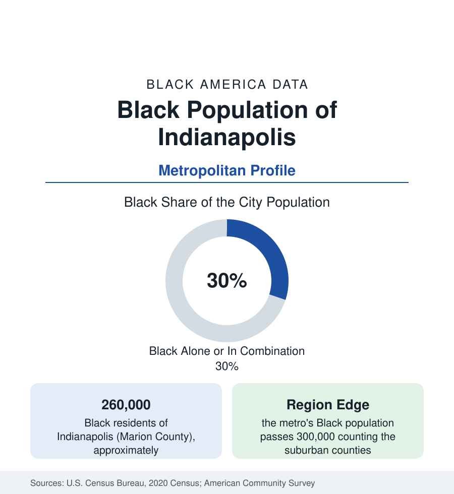

Black Cities
Black Indianapolis: Indiana Avenue's City, Three in Ten
Indianapolis holds about 260,000 Black residents — nearly three in ten — from the Indiana Avenue corridor to the township suburbs. The census profile.

Indianapolis holds about 260,000 Black residents in Marion County — Black alone or in combination, nearly three in ten of its people — and more than 300,000 across the metropolitan area. The state profile gives the frame; this profile gives the city: a community founded by free Black settlers in the 1820s, built into one of the Midwest's significant Black business districts on Indiana Avenue, and now distributed between the historic near-northside and the township suburbs in the pattern of the modern Midwest. The census data run beneath it throughout.
Indiana Avenue and the Founding Community
Black Indianapolis begins with the free settlements of the 1820s and 1830s — farming communities at the city's edges and a town population of artisans and laborers that, by the late nineteenth century, supported churches, newspapers, and a commercial strip on Indiana Avenue northwest of downtown. The Avenue became the district: jazz clubs that drew national acts, theaters, the offices of Black professionals, and the headquarters of the Walker hair-care empire, whose 1927 building — factory, salon, theater, and offices in one — survives as the Madam Walker Legacy Center, the district's preserved anchor. The surrounding residential neighborhoods — Ransom Place (the city's best-preserved historic Black district), Flanner House's service area, the near-northside streets toward Crown Hill — hold the community's old geography, remade at the edges by the downtown medical and university campus that expanded into the Avenue's eastern blocks.
The Modern Map: Townships and Corridors
Indianapolis's unified city-county government means its Black suburbanization happened substantially inside the city limits: the postwar townships absorbed the outflow in place. Washington and Lawrence townships on the northeast, Pike on the northwest, and Wayne on the west hold large, increasingly middle-class Black populations — homeowner subdivisions from the 1970s onward, anchored by the township school systems that drew families across the old city line without leaving the county. The east side's Post Road corridor and the far-eastside subdivisions add the newest growth. Beyond the county, Lawrence (an incorporated city in the metro's northeast), Fishers and Carmel in Hamilton County, and the Greenwood corridor record Black populations small in share and fast in growth — the metro data's forward edge. The historic core's indicators, meanwhile, record the familiar concentration: the near-eastside and northwest districts carry the city's poverty data, against township medians approaching the county's.
Institutions and Employment
The institutional base runs deep for a metro this size: Martin University, the state's predominantly Black institution, on the east side; the Indianapolis Recorder, among the nation's oldest Black newspapers, still publishing; a large church infrastructure across the north side; and the Black professional workforce of the health systems (IU Health's downtown campus is among the state's largest employers), the state government, and the logistics economy — the FedEx hub at the airport and the warehouse belt make Indianapolis one of the Midwest's freight capitals, with the employment distribution that implies. The sports economy (the Pacers, the Colts, the Speedway) and the convention business employ across the service tiers. Black median household income in the metro runs in the middle of this section's Midwestern set — above the steel belt's, below the Southern growth metros'.
Composition and Change
The community is native-born and migration-descended in the main — Mississippi and Alabama roots in the founding cohorts — with a distinctive newer layer: one of the Midwest's larger African immigrant populations, including a notable Nigerian professional community in the northern suburbs and refugee communities on the east side, now visible across the survey tables. Growth in the estimates concentrates in the townships and the donut counties; the historic districts' counts edge down as their housing ages and their elders' estates disperse — the standard intra-metro arithmetic, running inside an unusual governmental boundary that keeps most of it on one city's books.
Reading the Indianapolis Numbers
Indianapolis is the Midwestern profile at its most representative: a migration-era Black metropolis of a quarter-million, neither steel-belt contraction nor Sun Belt boom, whose data move with the national Black averages more closely than almost any city in this section. Its profile's value is exactly that typicality — and the Walker Building standing over Indiana Avenue as the reminder of how much of Black America's business history happened in cities its size.
More in Black Cities
Black Atlanta: Population, Distribution, and Growth of a Black Metropolis
Metro Atlanta holds more than two million Black residents — roughly one in three, second only to New York. The suburban distribution, migration history, and composition of Black Atlanta in the census data.
Black New York: The Largest Black Population in America
The New York metropolitan area holds about 3.4 million Black residents — more than any metro in the nation — and the city itself about two million. The census profile.
Black Washington: The District and the Metro
The Washington metro holds about 1.6 million Black residents, and the District itself — long a majority-Black city — now records a Black share near 41 percent. The census profile.
Source: U.S. Census Bureau, 2020 Census; American Community Survey; Population Estimates Program.